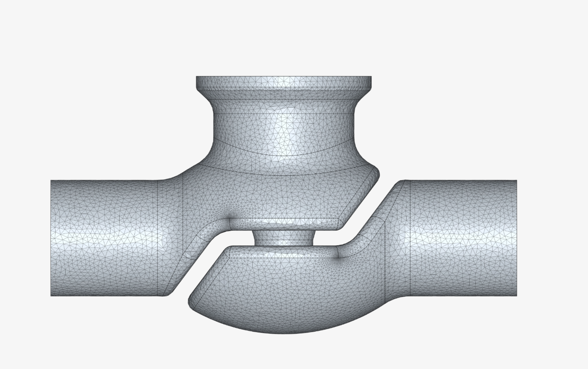

Engineering Projects
SkySpark HVAC Analytics & Workorder Tools
UC Davis Facilities Management Energy Engineering


During Collin's internship with UC Davis Facilities Management Energy Engineering, he developed SkySpark-based tools to help review HVAC system behavior, diagnose building issues, and connect equipment data with maintenance work orders.
Technologies: SkySpark, Axon, TRIRIGA, Siemens Desigo, HVAC Controls, Building Automation Systems, Data Analytics
TRIRIGA Task Workorder Lookup
Collin increased efficiency of looking up workorders by 300%. He accomplished this by utilizing AXON and SQL in order to create a view that connects building and equipment information with TRIRIGA work order records. With Collin's interface enhancement, users are able to quickly search task IDs, view task names, identify responsible organizations, and open linked maintenance records directly from SkySpark.
TherMOOstat Review Page
Collin developed a review page for zone-level HVAC diagnostics that displays relevant temperature, setpoint, airflow, damper, and workorder information in one view. This helps identify issues such as zones being too hot or too cold, sensor problems, and unusual discharge air temperature behavior.
Axon Development
The backend logic was written using Axon functions to query equipment, points, sites, and workorders. The code pulls relevant sensor points, organizes equipment metadata, and formats the results into usable review cards and tables.
Engineering Impact
These tools helped consolidate HVAC trend data, maintenance records, and equipment information into review pages that make troubleshooting faster and more organized.


MATLAB Yahtzee Application
Collin coded a complete Yahtzee game using MATLAB App Designer featuring single-player and multiplayer modes, score tracking, custom dice graphics, and an interactive graphical user interface. His GUI design improves user experience and helps users navigate the game.
Technologies: MATLAB, App Designer, GUI Development, Event-Driven Programming

Beam Vibration Analysis
Collin conducted experimental vibration testing using accelerometers and signal analysis techniques to identify natural frequencies, mode shapes, and measurement noise characteristics.
Technologies: MATLAB, FFT Analysis, Accelerometers, Experimental Testing, Signal Processing

Valve Leakage Detection Project
Developed a fault detection methodology for identifying leaking heating and cooling valves by comparing commanded valve positions against measured temperature changes across HVAC coils.
This project was presented as part of an engineering design study focused on improving HVAC diagnostics, reducing energy waste, and increasing occupant comfort.
Technologies: HVAC Controls, Fault Detection & Diagnostics, SkySpark, Data Analytics, Temperature Analysis


3D Printing & Filament Tuning
Gained hands-on experience with 3D printing by preparing prints, adjusting slicer settings, and tuning parameters for different filament types to improve print quality and reliability.
Skills Demonstrated: 3D Printing, Filament Tuning, Troubleshooting, Fabrication, Hands-On Prototyping


Custom LED Reflector Installation
Installed aftermarket LED reflector lights on my vehicle by removing the rear bumper assembly, routing new wiring, and integrating the LEDs into the existing brake light and turn signal circuits.
The project required identifying the correct vehicle wiring, creating reliable electrical connections through soldering, applying heat-shrink insulation, and routing wires cleanly to maintain an OEM-style appearance and long-term durability.
This project strengthened my hands-on experience with electrical systems, wiring diagnostics, soldering, disassembly/reassembly, and attention to detail during installation.
Skills Demonstrated: Electrical Wiring, Soldering, Heat Shrink Termination, Automotive Electronics, Troubleshooting, Mechanical Disassembly & Reassembly

Water Dispenser Electrical Repair
Diagnosed and repaired the heating system of a Primo water dispenser after discovering that a damaged electrical connector had caused the hot water functionality to stop working.
Rather than replacing the entire appliance, I traced the electrical fault, removed the damaged connector, soldered a new connection, and restored proper operation of the heating circuit.
The repair required disassembling the unit, troubleshooting electrical components, performing reliable soldered connections, and verifying safe operation after reassembly.
Skills Demonstrated: Electrical Troubleshooting, Soldering, Appliance Repair, Root Cause Analysis, Mechanical Disassembly & Reassembly, Preventive Maintenance

Arduino LCD Breadboard Circuit
Designed and wired an electronic character display circuit using an Arduino microcontroller, a breadboard, and a standard 16x2 LCD module. The project involved mapping data and control lines, integrating hardware components for backlight and contrast management, and writing embedded code to output text strings dynamically.
Skills Demonstrated: Embedded Systems, Circuit Design, Microcontroller Programming, Hardware Debugging, Electronic Prototyping

Toyota Corolla CarPlay & Backup Camera Upgrade
Upgraded a 2011 Toyota Corolla LE by installing an aftermarket Apple CarPlay head unit and backup camera system. The installation required removal of interior trim panels, routing wiring through the dashboard and vehicle interior, and integrating the new system with the vehicle's existing electrical components.
Skills Demonstrated: Automotive Electronics, Wiring, Interior Disassembly, System Integration, Installation & Troubleshooting